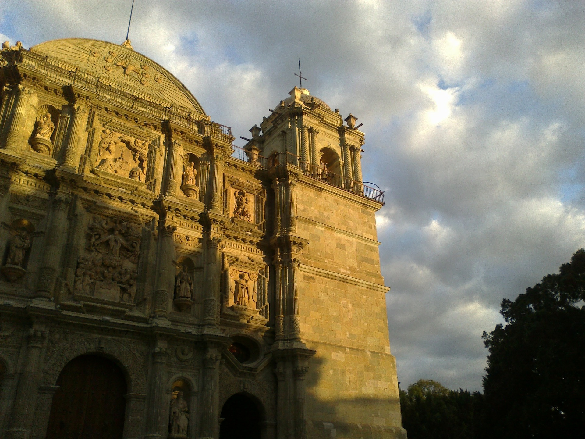

UBICACIÓN GEOGRÁFICA Coordenadas geográficas extremas Al norte 18º39', al sur 15°39' de latitud norte; al este 93°52', al oeste 98°32' de longitud oeste. (a) Porcentaje territorial El estado de Oaxaca representa el 4.8 % de la superficie del país. (b) Colindancias Oaxaca colinda al norte con Puebla y Veracruz-Llave; al este con Chiapas; al sur con el Océano Pacífico; al oeste con Guerrero.(a) Capital Oaxaca de Juáre
En el Estado de Oaxaca se asentaron las culturas Zapoteca y Mixteca, que erigieron centros ceremoniales, acrópolis y necrópolis, entre los que se pueden admirar: Monte Albán , Mitla, Yagul, Dainzú, Zaachila y Lambityeco. En Oaxaca se reúne en la actualidad la mayor concentración étnica del país, rica en tradiciones y costumbres, que conservan sus lenguas y dialectos: celebran fiestas para los vivos y los muertos, rindiendo culto a la naturaleza. Oaxaca tradicionalmente está dividida en 7 regiones: La Cañada, La Costa, La Sierra, La Mixteca, El Papaloapam, El Istmo y Los Valles Centrales; en esta última región se localiza la Ciudad de Oaxaca, capital del estado, que fue fundada en 1521 por Francisco de Orozco y elevada al rango de Ciudad en 1532. Su traza fue hecha por el alarife Alonso García Bravo, quien trazara también la Ciudad de México. El proceso evangelizador en el estado estuvo a cargo de la orden de los Dominicos; quienes construyeron 40 conventos con sus respectivos templos, magníficas obras de la arquitectura de la época, que en la actualidad pueden apreciarse en todo su esplendor. Oaxaca ha sido cuna de hombres ilustres como: Don Benito Juárez, Porfirio Díaz, Los Hermanos Flores Magón y José Vasconcelos, entre otros. En el campo de la artes sobresalen: Miguel Cabrera, Rufino Tamayo, Francisco Toledo y Rodolfo Morales, así como Doña Rosa y Teodora Blanco.
TIPS DE VIAJE
Son tantos los atractivos de la ciudad de Oaxaca que recibe visitantes con los intereses más variados y aficiones más diversas, por lo que es frecuente encontrar en sus calles a turistas de todo el mundo. Esta multiculturalidad de los visitantes se convierte en un atractivo más de la ciudad. Aunque la traza urbana de Oaxaca es sencilla y fácil de conocer, los frecuentes cortes de circulación y desvíos pueden complicar los traslados, sobre todo en su Centro Histórico, por lo que se recomienda hacer los recorridos a pie. Las cortas distancias entre los sitios de interés lo permiten. Una de las razones principales para visitar la ciudad de Oaxaca es su exquisita gastronomía. Hay un gran número de restaurantes, de todas las categorías, para deleitarse con ella; sin embargo, no hay que dejar de comer en alguno de sus mercados como el Benito Juárez, el 20 de noviembre o el de La Merced. Tanto para el hospedaje como para los traslados es recomendable reservar y confirmar con antelación pues la ciudad de Oaxaca, además de sus atractivos propios, es un centro de comunicaciones y transportes con toda la región y los servicios suelen saturarse, principalmente en las temporadas vacacionales. Aunque formalmente no es parte de la ciudad de Oaxaca, el gran centro ceremonial de Monte Albán, es considerado uno de sus principales atractivos y visita obligada. Hay muchos transportes diarios desde el centro de la ciudad y se puede llegar también en taxi, aunque hay quienes prefieren hacer el camino, en una pronunciada subida, a pie. Situada a unos cuantos kilómetros al oeste de la ciudad, la antigua capital del imperio zapoteca, es una extensa e impresionante zona arqueológica, con una magnífica vista hacia los cuatro puntos cardinales. Hay que llevar ropa ligera y calzado cómodo para recorrerla. Junto con Mitla, Yagul, Dainzú, Lamibityeco y Zaachila son extraordinarias huellas de la cultura prehispánica.
COMO LLEGAR
La ciudad de Oaxaca, capital del estado, está muy bien comunicada con el resto de la República Mexicana, principalmente con los estados vecinos de Veracruz, Puebla, Chiapas, y es el núcleo de las comunicaciones con las demás poblaciones de la región. Modernas carreteras lo comunican con la costa, las capitales estatales vecinas y la Ciudad de México. Cuenta con un aeropuerto internacional, con vuelos diarios a las ciudades de la costa, como Huatulco y, también, diariamente, a la Ciudad de México y otras regiones del país; también tiene vuelos directos a los Estados Unidos, con los que mantiene un flujo constante de viajeros.
MUSEOS DE OAXACA
Museo Casa de Juárez García Vigil 609, Centro Oaxaca, Oax. C.P. 68000 Tel. (951) 516 1860 Horario y Costo: Martes a Domingo, 10 a 19 hrs. Entrada: $34 Domingos, niños menores de 13 años, estudiantes, maestros e INAPAM, entrada libre.
Museo Casa de la Ciudad (CdiC) Biblioteca Andrés Henestrosa (BH) Porfirio Díaz 115 esq. Morelos, Centro Oaxaca, Oax. C.P. 68000 Entrada libre a ambas instituciones. Biblioteca Andrés Henestrosa (BH) (planta baja) Tel. (951) 516 9750, 516 9715. Lunes a Domingo, 9 a 20 hrs. bibliotecahenestrosa@yahoo.com.mx Museo Casa de la Ciudad (CdiC) (planta alta): Tel. (951) 516 9647, 516 9648. Oficinas: Lunes a Viernes, 9 a 15 hrs y 17 a 20 hrs. Exposiciones: 9 a 20 hrs. www.casadelaciudad.org
Museo de Arte Contemporaneo (MACO) Macedonio Alcalá 202, Centro. Oaxaca, Oax. C.P. 68000 Tel. (951) 514 1055, 514 2818, 514 2228. Miércoles a Lunes, 10 a 20 hrs. Entrada: $10 (aplica excepciones). Domingo gratis www.museomaco.com
Museo de Filatelia de Oaxaca (MUFI) Reforma 504, Centro. Oaxaca, Oax. C.P. 68000 Tel. (951) 514 2366, 514 2375, 516 8028. Martes a Domingo, 10 a 20 hrs. Entrada Libre www.mufi.org.mx
CENTRO CULTURAL SANTO DOMINGO (CCSD) Macedonio Alcalá s/n, Ex Convento de Santo Domingo, Centro. Oaxaca, Oax. C.P. 68000. Coordinación: (951) 516 9741. Martes a Domingo, 10 a 17:30 hrs. *Biblioteca Francisco de Burgoa (BFB) *Museo de las Culturas de Oaxaca *Hemeroteca Pública "Periodista Néstor Sánchez Hernández" *Jardín Etnobotánico de Oaxaca Biblioteca Francisco de Burgoa (BFB) Tel. (951) 514 2559, 501 2299. Sala de consulta: Lunes a Viernes, 9 a 15 hrs. Sala de exposiciones: Martes a Domingo, 10 a 18 hrs. Entrada libre. www.bibliotecaburgoa.org.mx Museo de las Culturas de Oaxaca Tel. (951) 516 2991. Dirección ext. 3, servicios educativos ext. 4. Martes a Domingo, 10 a 17:30 hrs. Entrada $70 (aplica descuentos). Domingo entrada libre. Hemeroteca Pública "Periodista Néstor Sánchez Hernández" Reforma s/n esq. Constitución, acceso sur del Ex Convento de Santo Domingo. Centro. Oaxaca, Oax. C.P. 68000. Tel. (951) 516 7234 Lunes a Viernes, 9 a 20 hrs, y Sábado, 9 a 17 hrs. Entrada libre. Jardín Etnobotánico de Oaxaca Reforma s/n esq. Constitución, acceso sur del Ex Convento de Santo Domingo. Centro. Oaxaca, Oax. C.P. 68000. Tel. y Fax (951) 516 5325 y 516 7915. etnobotanico@prodigy.net.mx Visitas en español: 10 a 11, 12 a 13 y 17 a 18 hrs. Entrada: $50 Visitas en inglés: Martes, Jueves y Sábado, 11 a 13 hrs. Entrada: $100. Aplican descuentos. Biblioteca Especializada en Ciencias Naturales y Agronómicas. Tel. (951) 516 9017. Lunes a Viernes, 9:30 a 19 hrs, y 9 a 13 hrs. Entrada libre.